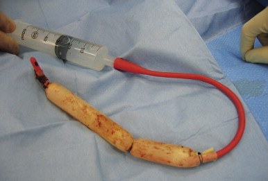

Liver trauma
Definition
Major liver injury
· Associated CV
compromise
· In pt with
significant liver co-morbidity
— Tx
— Tumours
— Cirrhosis
· Grade I-III : 95% success for non-operative Mx
Grading
· AAST OIS
|
Grade injury |
Subcapsular
haematoma (% surface area) |
Laceration |
Parenchymal
haematoma |
vascular |
|
1 |
<10 |
1cm |
|
|
|
2 |
10-50 |
1-3cm |
<10cm |
|
|
3 |
>50 |
>3cm |
>10cm |
|
|
4 |
|
25-75% of lobe or
1-3 segments in a single lobe |
|
|
|
5 |
|
>75 lobe or
>3 segments |
|
Retrohepatic
IVC or Hepatic vein |
Mx
Non-operative
· up to 2/3 of
laparotomies done for positive DPL are non-therapeutic
· somewhere b/t
50-80% of blunt hepatic injuries can be managed non-operatively
· Non-operative
management of blunt liver trauma is successful in 95% (series of
1000 patients)
· 5% complication
rate
· grade IV
and V and VI injuries
— require
follow up CT scanning
— require
operative intervention in 70%
Criteria
· Haemodynamic
stability
· CT scan
— delineating the
extent of injury
— lack of
associated enteric or retroperitoneal injuries requiring no intervention
— no evidence of
ongoing bleeding (pooling of contrast at the site of injury)
· Absence of
peritoneal signs
· Ltd transfusion
requirement < 4unit over 24 hrs
Missed associated injuries
· there is a 5% incidence of associated enteric injury
with “isolated” hepatic injury in blunt trauma
· CT is 97% accurate
but not 100%
· in most series
missing these injuries in the initial assessment is not associated
with poorer outcome
· no substitute for
repeated examination by the same examiner
Complications
· Bile leak
— » 0.5% require intervention
— Biloma: collection
of bile – frequently become infected. Treated by percutaneous
drainage.
— Biliary-pleural
fistula: cause empyema
— Bilhemia:
Intra-hepatic fistula between hepatic vein and bile duct
producing jaundice
— Haemobilia: rupture
of an arterial pseudoaneurysm into biliary tree causing upper Gi
haemorrhage.
— Diagnosis with HIDA
scan or ERCP and treat with biliary
stenting/sphincterotomy/percutaneous drain
· Infected hameatoma
· Liver necrosis
· Haemobilia
· Haemorrhage
v Pachter 1996 J
Trauma 404 patients - Western multicentre trial group
— 90% of
conservatively treated blunt liver trauma does not require
transfusion
— Hepatic related
mortality as a result of failed conservative management is 0.5%
Resumption of normal activities
· HDU monitoring 48-72h, then 2-5d further
of bed rest, depending on clinical judgement
- remember thromboprophylaxis.
- 12
weeks
· based on
experimental studies of healed liver bursting strengths
Angio-embolization
Candidiates are
those who are haemodynamically stable with continuing
transfusion requirement and with contrast extravasation.
Blush --> urgent angio
Angio is effective at controlling arterial bleeding, but venous bleeding better managed by tamponade
- may need
a combination in effective therapy.
Predictors of failed conservative management:
- positive
FAST
- injury to other solid organs (spleen and kidney)
- blood in multiple intraperitoneal areas on imaging
- need for transfusion
--> absence of all 4 = 96% chance of success
Surgery
Approach
Must be organised and systematic, well planned before
beginning surgery
- blood
produces, rapid infusre, warmer, multiple suctions, cell saver
considered
- experienced team, wide prep to knees, self retaining retractor
eg omni, many sponges, hemostatic agents.
Indications
· Cardiovascular
compromise
· Peritoneal signs
· Ongoing transfusion
requirement (and not amenable or failed rad. therapy
· Large subcapsular
haematoma
— Needs deroofing
otherwise get subcapsular
stripping
Technique
· Long midline ± RUQ
transverse
· 4 quadrant pack
· ? RUQ blood
— Evacuate blood
— Briefly assess
injury
— Pack, manual /
bimanual pressure on liver, place retractor, catch up on
resuscitation, get everything ready
Medium abdo's in
1/2 with radio-opaque stripes
- release pressure slowly to gauge degree of injury, then
management will depend on severity
Mobilise within
limits of incision as necessary falciform,
Don't forget to control other major sources quickly if easily to
keep on top of bleeding
Enteric content control follows haemorrhage control.
Minor Injuries
Simple hemostatic techniques
Superficial lacerations:
- 5-10m of
direct compression
- topical agents
- electrocautery or argon beam coagulation
Diffuse surface bleeding from capsule disruption
- topical agents, e.g. fibrin flue
- hemostat fabric
- topical collagen
Then compress for another 5-10 minutes by clock and reassess
Continued bleeding:
- consider direct sutures
- transcapsular sutures of 0-chromic with blunt-nose needles
- avoid tight sutures that will tear liver capsule
- pledgets may be helpul, or surgicel
- place
sutures quite close to liver edge to avoid large areas of
necrosis.
Moderate to Severe Injuries
Slightly larger lacerations
- pack with
tongue of omentum and use transcapsular liver sutures to hold it
in place
- enter defect first and ligate any bile duct or vascular injuries
with figure-8 sutures
--> may not work if larger branches of hepatic artery or portal
system deep in liver parenchyma
--> then use finger fracture technique; pinch parenchyma to
enlarge injury, until larger bleeders identified, then clip /
ligate / repair
Major bleeding when compression released
Reapply compression.
Rapidly control inflow and mobilize liver
- Pringle maneuver; left index finger through foramen and use thumb to compress the hepatic artery and vein.
-
gastrohepatic ligament opened bluntly or cautery bein aware of
possible replaced or accessory L hepatic artery
--> vascular clamp here; usually stated 20m on 5m off but no
good evidence that longer is bad.
--> will control ~85% of injuries
Then mobilize liver to identify and manage the injury.
-
ligamentum teres and falciform divided and followed back to the
suprahepatic vena cava
- right and left triangular and coronary ligaments then mobilized
- take care to evaluate haematomas in triangular ligaments; may
represent a stable major vessel injury and would result in rapid
exsanguination.
Delineate extent of injury
- can
bleeding intrahepatic vessels and ducts be identified and
controlled?
- venous bleeding is generally controlled by packing to tamponade
--> ongoing bright red bleeding is arterial.
-->
consider packing and angioembolization of bleeding arteries /
arterioles as a damage control procedure.
Formal hepatectomy?
- hazardous. only experience hands; most injuries are not in
anatomical lines.
Liver may be devascularized - then hepatectomy, in experienced
hands.
ICU for aggressive resuscitation and warming.
Optimal
Packing
Fully mobilize
L lateral segment - rotate to right, place packs posteriorly.
Superiorly
- packs to diaphragm and liver
Right lobe - rotate medially, pack along vena cava between liver
and diaphragm.
--> compression of liver between anterior chest, diaphragm and
retroperitoneum
--> tamponade
Penetrating
Injuries
Long narrow wounds that bleed from deep within the tract =
challenging
Foley catheter and 1 inch penrose drain and silk ties to create a
tamponade balloon
- cut balloon so fills penrose

Can drain bile leaks and sort out electively later.
- minor injuries can be treated with repair over a T-tube
Complications
1. Early haemorrhage
- bleeding can occur at any time
- CT angiography; most can be managed non-operatively
- nb liver injury contraindicates chemical thromboprophylaxis
2. Bile leak
- CT guided drainage
- high output (>50ml/day) and not resplving, need ERCP
- if required may be able to stent the injury, rare operative
intervention required.
3. Abscess.
- esp. if associated enteric injuries, extensive parenchymal
injury, inadequate debridement, and massive transfusions
- treat as per hepatic abscess; rarely will require operative
drainage and debridement
4. Necrosis
- devascularization problem.
- abdo pain, tenderness, feeding intolerance, coagulopathy, LFT
elevation, sepsis, liver failure.
- CT scan for devascularized segments; resect major devascularized
segments
5. Hemobilia
- problem mainly historic when surgery created iatrogenic
connections between arteries and ducts
- triad of RUQ pain, jaundice and GI bleeding.
Rest of Jeromes notes
Majority will
stop with compressive packing and haemostatic agents
-
surgicel, fibrillar, flowseal
· Assess
rest of abdo
· Reassess
— Stopped® close
· Continued bleeding
® Dnostic Pringle
— +ve in flow
problem
— -ve retrohepatic
problem (rare)
— Or replaced left or
right hepatic artery
Trauma
· Optimise conditions
— Incision
— Lighting
— Retraction
— Instruments
— Personnel (call
for help from most experienced available liver surgeon)
— CVP/
resuscitation
· Mobilise liver
— For R lobe
Retract R lobe
medially
Divide with
scissors
R D
Superior &
inferior coronaries
Mobilise bare area;
careful of adrenal
Falciform
— L lobe
Divide falciform
& L triangular
· Remove packs,
reassess ± release pringle
— Nature &
extent
— ? devitalised
liver
— ? inflow, ?
outflow
· Repringle &
definitive packing
— Pack to restore
anatomical shape
above and below; in
front and behind
— Care not to
compress IVC
— Majority of
remainder will stop with packing and second look laparotomy
+/- interventional radiology if ongoing bleeding suspected in
ICU
· Release pringle
· Works ® close
· Doesn’t work
— Wrong packing
technique
— Significant
inflow bleeding
— Outflow
obstruction
Intrahepatic
haematoma
2° to packs (wrong
technique)
Over resuscitated
Cardio respiratory
problems
Pneumothorax,
temponade
Lacerated hepatic
veins
— Retrohepatic
bleed
· Consider
— Selective hepatic
artery ligation
Hepatic venous
injury ± inflow problem
When pringle works
well & can’t control with packing
Mass ligate the
affected side with knowledge that hemi hepatectomy will be
required later
— Hepatic isolation
Retrohepatic bleed
Dissect up duodenum and clamp IVC
Manoeuveure clamp over dome of liver and clamp IVC
above
1° repair of caval /hepatic outflow injury
· Rebleed
— Angio ±
embolisation
for inflow bleeding
angioportography
for outflow
— CT to assess
injury & packing
Other
techniques
· 1° suture to
appose
— packing generally better
· Mesh pita pocket
— 2 pieces of mesh sutured together with slit for
IVC & portal structures
— packing probably better
· Finger fracture
& 1° suture of vessels
— if heavily contused or lacerated
anatomical resection by specialist surgeons
someimtes required for definitive control of major bleeding.
finger fracture technique to expose underlying
major bleeders which can then be ligated
93% success with grade III or IV (Pachter J trauma
1996)
· Atriovenous
shunting
— Rarely used, takes too long, need experience ++
— with a no. 8 endotracheal tube chest tube
— median sternotomy
— Satinsky on the R atrial appendage with a prolene
pursestring